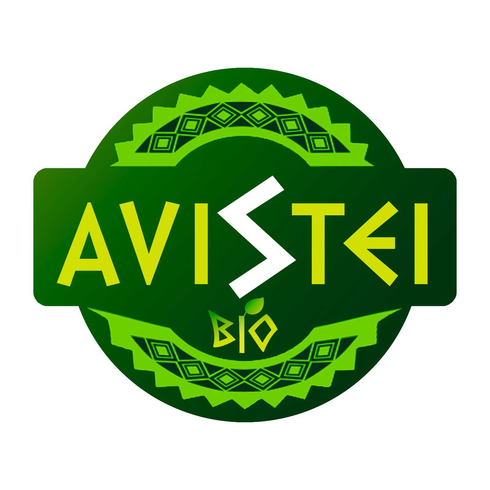
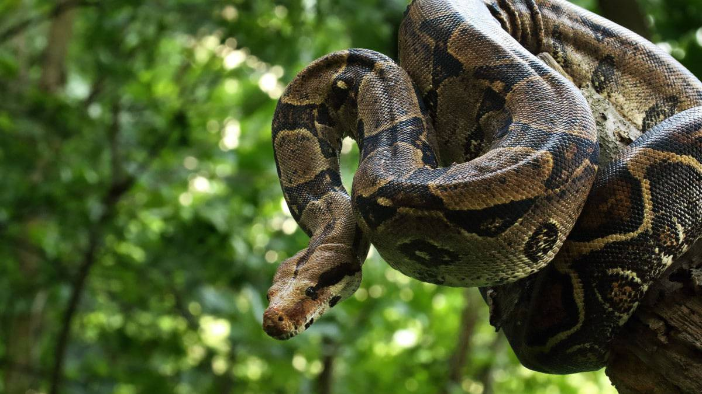

<!DOCTYPE html>
<html lang="pt-br">
<head>

    <meta charset="UTF-8">
    <meta http-equiv="X-UA-Compatible" content="IE=edge">
    <meta name="viewport" content="width=device-width, initial-scale=1.0">
    <link rel="stylesheet" href="/styles/style.css">
    <link rel="stylesheet" href="styles/scrollbar.css">
    
    <link href="https://cdn.jsdelivr.net/npm/bootstrap@5.3.0/dist/css/bootstrap.min.css" rel="stylesheet" integrity="sha384-9ndCyUaIbzAi2FUVXJi0CjmCapSmO7SnpJef0486qhLnuZ2cdeRhO02iuK6FUUVM" crossorigin="anonymous">
    <link rel="icon" type="image/png" href="src/assets/img/logo.png">
    <title>Avistei - Boa constrictor/title>
</head>

<body style="background-image: url('src/assets/img/topside.png'); background-repeat: no-repeat; background-size: cover; background-attachment: fixed; position: relative;">
    <div id="app"></div>
    <script src="https://cdn.jsdelivr.net/npm/bootstrap@5.3.0/dist/js/bootstrap.bundle.min.js" integrity="sha384-geWF76RCwLtnZ8qwWowPQNguL3RmwHVBC9FhGdlKrxdiJJigb/j/68SIy3Te4Bkz" crossorigin="anonymous"></script>
    <script src="https://cdn.jsdelivr.net/npm/vue@2.7.9"></script>
    <script>
        new Vue({
            el: '#app',
        template: `

        <div class="container">

            <!-- Navbar -->
<div style="padding-bottom: 5%;">
 <nav class="d-flex align-items-center justify-content">
     
     
     <a href="animals.html" class="d-flex flex-column align-items-center">
         
         <span>Animais</span>
     </a>
     
     <a href="about.html" class="d-flex flex-column align-items-center">
         
         <span>Projeto</span>
     </a>
     
     <a href="health.html" class="d-flex flex-column align-items-center">
         
         <span>Saúde</span>
     </a>
 </nav> 
</div>


<div class="row">

<!-- Buttons / Content -->
 <div class="col-sm-5">
   <div class="text-container">
     <h3>Jiboia<i>(Boa constrictor)</i></h3>
     <p>
       A jiboia (Boa constrictor) é uma serpente pertencente à família Boidae. As serpentes pertencem à classe dos répteis e são caracterizadas por apresentar corpo alongado e coberto por escamas, ausência de patas anteriores, podendo ocorrer patas posteriores vestigiais em algumas espécies, entre outras características.
     </p>
<p>
 <button class="btn btn-success" type="button" data-bs-toggle="collapse" data-bs-target="#collapseWidthExample" aria-expanded="false" aria-controls="collapseWidthExample">
   Sobre o animal
 </button>
 <button class="btn btn-danger" type="button" data-bs-toggle="collapse" data-bs-target="#collapseWidthExample2" aria-expanded="false" aria-controls="collapseWidthExample2">
   Sofri um acidente
 </button>
</p>


<div style="min-height: 120px;">
 
 <div class="collapse collapse-horizontal" id="collapseWidthExample">
   <div class="card card-body-lg" style="max-width: 600px; width: 600px;word-break: break-word;">
<ul>
 <li>Boa constrictor</li>
 <li>A jiboia é uma das maiores espécies de serpentes do mundo. Os adultos podem atingir comprimentos de até 3 a 4 metros, mas existem registros de indivíduos ainda maiores.</li>
 <li>As jiboias têm um corpo robusto, com cabeça triangular e olhos grandes. </li>
 <li>Sua coloração pode variar, mas geralmente são de tonalidade marrom, com padrões em formato de manchas ou listras mais escuras ao longo do corpo.</li>
 <li>As jiboias são serpentes constritoras. Elas capturam presas como mamíferos, aves e répteis.</li>
 <li>São animais predominantemente noturnos. Durante o dia, elas costumam descansar em árvores, tocas ou outros esconderijos.</li>
 <li>As jiboias têm uma vida relativamente longa em comparação com outras serpentes. Em cativeiro, podem viver de 20 a 30 anos, e há relatos de indivíduos que viveram mais de 40 anos.</li>
 <li>As jiboias desempenham um papel importante no controle de populações de roedores e outras presas, ajudando a manter o equilíbrio dos ecossistemas onde habitam.</li>
 <li>As jiboias geralmente são serpentes tranquilas e preferem evitar o confronto. Quando se sentem ameaçadas, podem se enrolar para se proteger e morder se necessário, mas não são agressivas por natureza.</li>
</ul>
   </div>
 </div>

 <div class="collapse collapse-horizontal" id="collapseWidthExample2">
   <div class="card card-body-lg" style="max-width: 600px; width: 600px;word-break: break-word;">
<ol>
 <li>Mantenha a calma: É fundamental manter a calma para evitar que o veneno se espalhe mais rapidamente pelo corpo. A maioria das espécies de jiboia não é venenosa para os seres humanos, portanto, o perigo imediato é menor em comparação com serpentes venenosas.</li>
 <li>Busque atendimento médico: Embora as jiboias não sejam venenosas, uma picada ainda pode causar ferimentos e infecções. Se a mordida resultar em uma ferida aberta, é importante procurar assistência médica para limpar e tratar a lesão adequadamente.</li>
 <li>Limpe a área da picada: Lave cuidadosamente a área da picada com água e sabão para evitar infecções.</li>
 <li>Controle o sangramento: Se a picada resultar em sangramento, aplique pressão suave com um pano limpo ou bandagem para controlar o fluxo sanguíneo. Eleve o membro afetado, se possível.</li>
 <li>Observe os sintomas: Mesmo que as jiboias não sejam venenosas para os humanos, é importante ficar atento a qualquer reação adversa ou sintomas incomuns após a picada. Se houver qualquer anormalidade, procure atendimento médico imediato.</li>
 <li>Evite tratamentos caseiros: Não aplique remédios caseiros ou tradições populares na área da picada. Alguns métodos, como cortar ou chupar o local, podem causar mais danos e infecções.</li>
 <li>Evite confrontos com a serpente: Se você estiver ao ar livre ou em uma área com presença de serpentes, evite interações ou tentativas de capturar a serpente. Respeite a distância e dê espaço para que a serpente possa se afastar.</li>
 <li>Identifique a serpente, se possível: Se você conseguir identificar corretamente a espécie da serpente, informe isso aos profissionais médicos.</li>
</ol>
   </div>
 </div>

</div>

<div style="min-height: 120px; overflow-x: visible;">
 
</div>


   </div>
 </div>

<!-- Hero Animal --> 
<div class="col-sm-5">
 <div class="image-container">
   
 </div>
</div>

</div>

<br>
<!-- Comments -->
       <h1>Você avistou um desses? Conte-nos!</h1>
               <hr/>
               
               <div class="form-todo form-group">
                   <p>
                       <input type="text" name="author" placeholder="nome" class="form-control-lg" v-model="name">
                   </p>
                   <p>
                       <textarea name="message" placeholder="comentário" class="form-control-lg" v-model="message"></textarea>
                   </p>
                   
                   <button v-on:click="addComment" type="submit" class="btn btn-success" style="-webkit-box-shadow: 3px 3px 5px 5px #000000; box-shadow: 5px 5px 15px 5px #000000;">Comentar</button>
               </div>
               <br>
               
               <div class="list-group">
                   <div class="list-group-item" v-for="(comment, index) in allComments">
                       <span class="comment__author">Autor: <strong>{{ comment.name }}</strong></span>
                       <p>{{ comment.message }}</p>
                       <div>
                           <p><a href="#" title="Excluir" v-on:click.prevent="deleteComment(index)">Excluir</a></p>
                       </div>
                   </div>
               </div>
               
               <hr/>
</div>       `,
        data() {
            return {
                comments: [],
                name:'', message: '',
            }
        },
        methods: {
            addComment() {
                if(this.message.trim() === ''){return;}
                this.comments.push({name: this.name, message:this.message});
                this.name ='';
                this.message = '';
            },

            deleteComment(index) {this.comments.splice(index, 1)},
            getImage() {return 'trip.jpg'}
            
        },
        computed:{
            allComments(){
                return this.comments.map(comment => ({
                  ...comment,
                   name: comment.name.trim() === '' ? 'Anônimo' : comment.name
                }))
            }
        },
        watch:{
            comments(val) {
                console.log('val', val);
            }
        }
    });
</script>

    </body>
</html>

